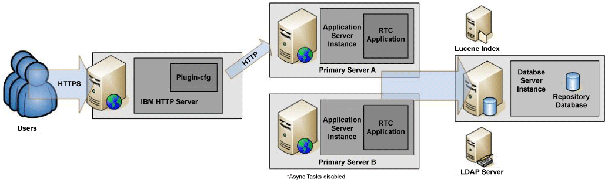

The Rational Team Concert™ Idle Standby configuration enables recovery from failover to help ensure minimal impact on business operations during planned or unplanned server outages. To implement the idle standby configuration, you must have the Enterprise edition of Rational Team Concert and WebSphere® Application Server.
The following topology diagram illustrates the configuration for the Rational Team Concert basic high availability when using idle standby. In the following figure, the IBM® HTTP Server is used to direct incoming traffic to one of the two WebSphere Application Servers, Primary Server A or Backup Server B. The WebSphere servers represent a primary and secondary node in the cluster. They are both members of the same cluster cell. In addition to the WebSphere nodes, there is an LDAP server, a file server (for Lucene index), and a Database server.
The following table lists the basic high availability requirements:
| Server | Software | Operating system |
|---|---|---|
| IBM HTTP Server |
|
Windows®, Linux® |
| WebSphere Application Server Primary Server A |
|
Windows, Linux |
| WebSphere Application Server Primary Server B |
|
Windows, Linux |
| Optional - File Server, Shared Disk | Lucene Index - full text index | Windows, Linux |
Did this help? You can provide feedback at Jazz.net (registration required): or